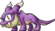

⚠ 連續
0
次讀不到，位置可能跑掉了。
去校準

魔龍修仙
紀錄
地圖:—
Lv.— —（—%）
經驗/hr: —
距離升級 —
水錢/hr: — [HP:—/MP:—]
楓幣/hr: —
本次計時 0:00:00
開始
結束
#
地圖
時間
每小時經驗
每十分鐘經驗
藥水費/hr
藥水費/10min
楓幣/hr
楓幣/10min
時長
樣本
經驗值
地圖
等級
血水
未校準
藍水
未校準
楓幣
校準
校準
─
▢
✕
分享畫面 · 尚未連線
現在截到
範例
讀到
現在截到
範例
讀到
血水
藍水
放第幾格
用哪一種（算錢用）
藥水種類與單價
名稱
種類
單價
hp
mp
新增
選中：
（無）
重新框選
存成範例
↑
←
→
↓
寬－
寬＋
高－
高＋
快迴圈間隔（100~1000ms）
藥水啟用
楓幣啟用
每小時／每十分鐘預設
每小時
近十分鐘
介面縮放 zoom
1x（預設，跟桌面版逐像素一樣）
2x
3x
清除所有本機資料
會清掉紀錄、校準、藥水單價、設定，且無法復原
關於
版本
所有資料只存在你的瀏覽器
1. 連線 → 校準（第一次用要先框位置）
2. 開始 → 打怪 → 結束
3. 「紀錄」看成績、匯出 CSV 備份
未連線
模型尚未載入
確定